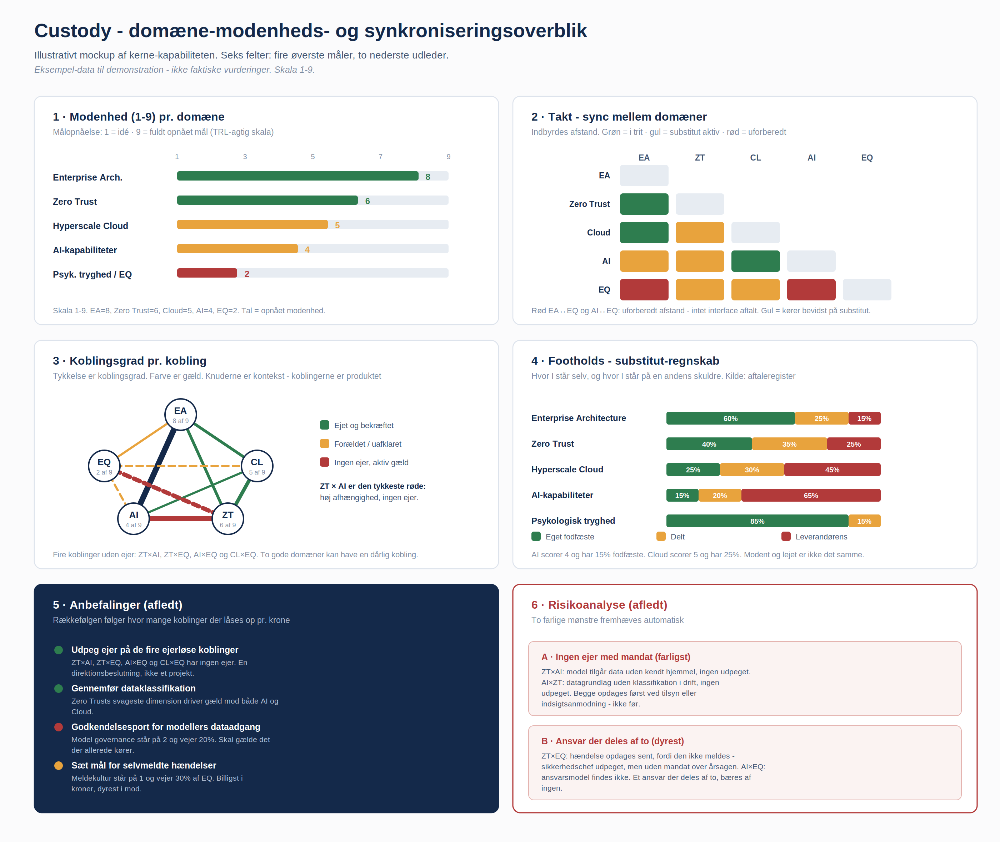
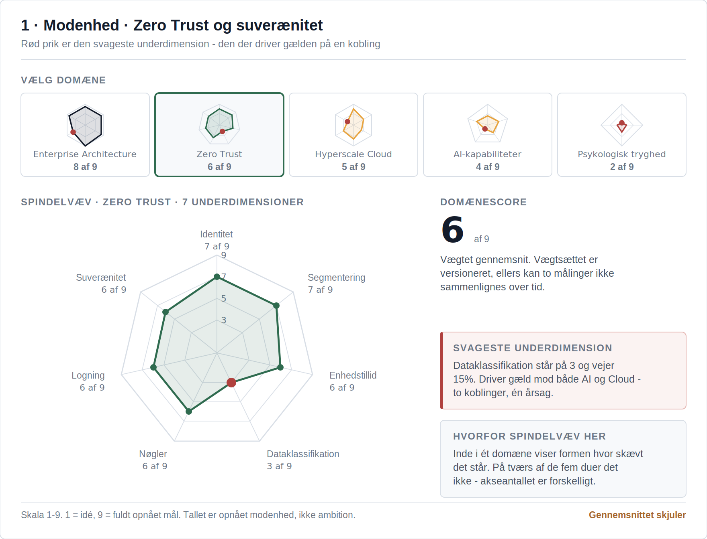
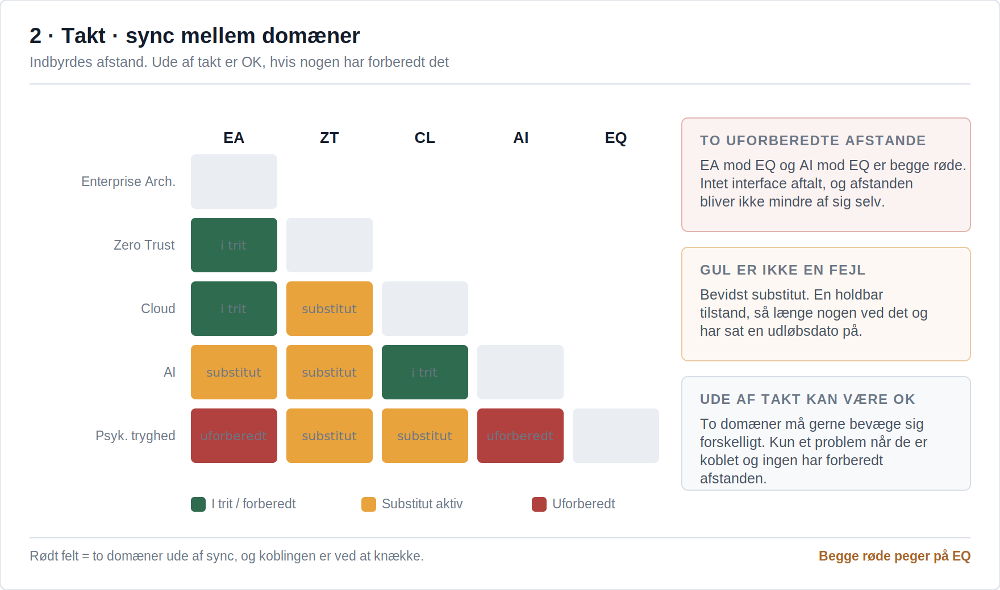
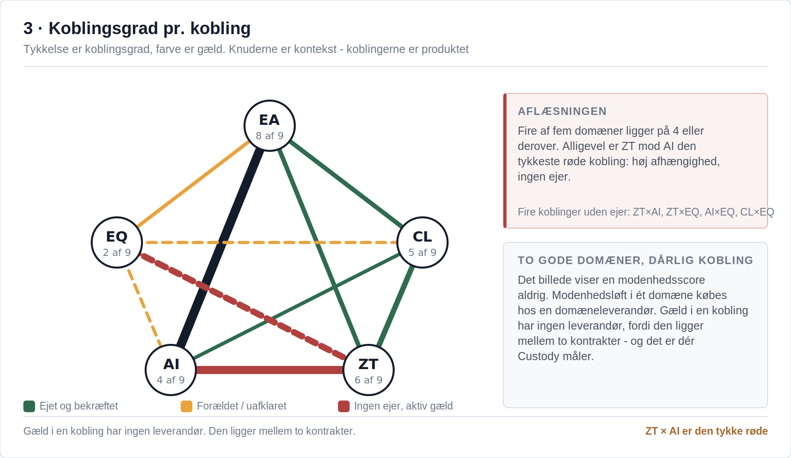
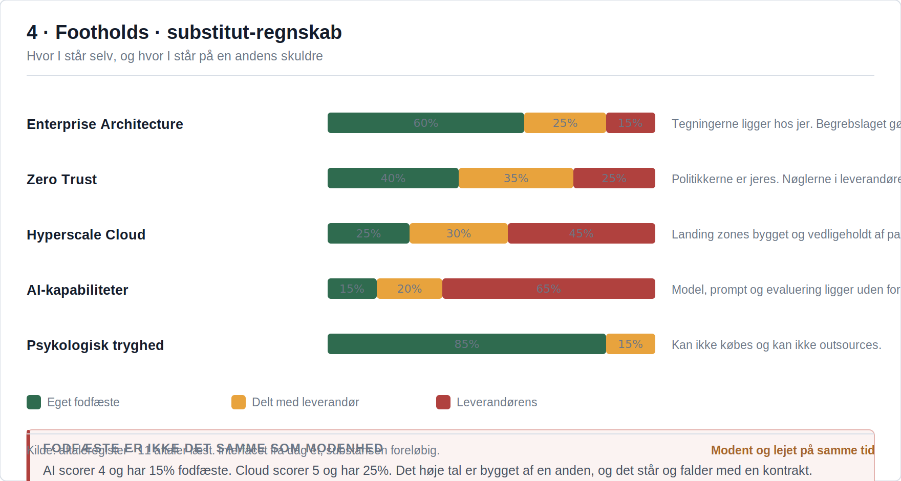
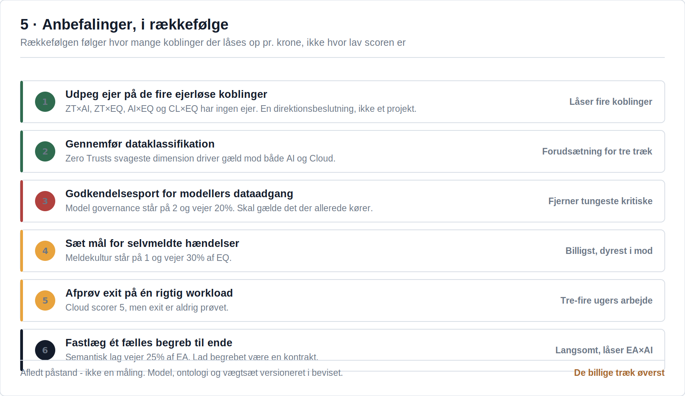
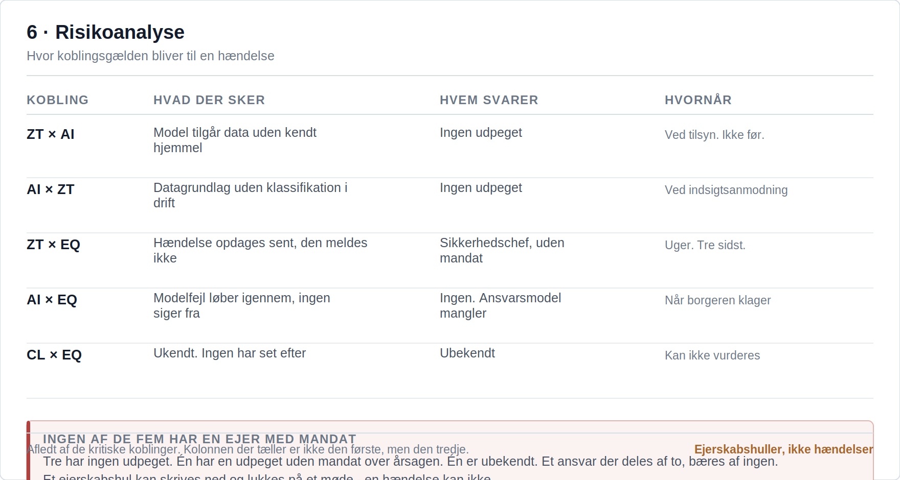

Strategisk second opinion
Oberoende motstånd mot riktning och leverantörsval, innan beslutet låses.
När varje spår rapporterar grönt och programmet ändå glider. Vi tar reda på var det faller mellan spåren, och efter tre veckor finns en karta med namn på vem som äger vad.
När ett beslut har stått stilla i månader för att arkitektur, säkerhet och juridik var för sig har sagt ja till sin egen del. Vi tar reda på vad som faktiskt håller tillbaka det och gör det beslutsklart inom en månad.
När två leverantörer var för sig levererar exakt det de skrivit under på, och helheten ändå inte fungerar. Vi tar reda på vad som ligger emellan och vem som ska äga det. Vanligtvis på tre veckor.
Första steget är alltid detsamma: tre kvart utan bilder. Ni berättar om en tvärgående fråga som alltid kör fast, och vi tittar på den tillsammans. Ingen förberedelse, och ni förbinder er inte till något efteråt.
AI-eran gör kunskap billig. Det som blir knappt är sammanhanget: kopplingarna mellan program, domäner och leverantörer. Den som äger kopplingslagret äger riktningen. Den som hyr det av en leverantör har lagt ut sitt eget handlingsutrymme.
Se det i marknaden. Debatten om plattforms-lock-in - senast kring Palantir - handlar i grunden om en enda fråga: äger kunden sin egen kontext, eller hyr den? Men mönstret är större än den enskilda leverantören, och sällan avgörs det av ett enda beslut. Kopplingslagret flyttar ut lite i taget:
Var och en var förnuftig, var och en godkändes, och ingen av dem var beslutet att lämna ifrån sig överblicken. Tillsammans är de det. När modellerna blir billiga vinner de leverantörer som låter kunden gå utan att förlora det sammanhang de byggt upp. Det är hela utgångspunkten för Looplo: kopplingar ska ägas, inte hyras.
Looplo byggs som ett kurerat nätverk för oberoende rådgivning i skärningspunkten mellan fem domäner: enterprisearkitektur, hyperscale cloud, zero trust och suveränitet, agentisk AI och psykologisk trygghet. Domänerna är ömsesidigt beroende - men sällan alla samtidigt. Problemet sitter oftast mellan två eller tre av dem, och det är där en lösning står och faller: den kommer aldrig längre än sin minst mogna domän.
Förtroende är inte en enda siffra. Varje domän bidrar med sin del - och toppbetyg i alla fem utan integration ger fortfarande en organisation man inte kan lita på. Looplo bygger det saknade integrationsorganet.
Fler ögon på arbetet. Det säkrar kvaliteten i båda riktningarna - djupet inom den enskilda domänen och samspelet dem emellan. Nätverket byggs av yrkesfolk som tar helheten och de ömsesidiga beroendena på allvar; det är dét som kvalificerar dem, inte djup inom ett enda fält. I dag bärs rådgivningen av en erfaren rådgivare med ett fackligt nätverk omkring sig; det utvidgas medvetet och kurerat. Oberoende fackrådgivning som står för sin signatur.
Med peer review som princip. Tre former, beroende på behov och situation.
Oberoende motstånd mot riktning och leverantörsval, innan beslutet låses.
Styrning över modell- och implementeringshus, så att kunden äger helheten och ingen leverantör bestämmer riktningen.
Från arkitektoniskt fundament till ansvarsfullt införande - införandet brister om fundamentet hoppas över.
Disciplinerna är desamma. Det som skiftar är vad som pressar hos er, och därmed vad initiativet kommer att heta.
Samma åtta återkommer, oavsett vad initiativet heter. Det är ingen katalog att välja ur: diagnosen pekar på vad situationen kräver, och ofta är det en av dem, inte fem.
Samma arbete i fem skepnader. Vilken det blir avgörs av vad som pressar hos er - inte av en katalog.
Kopplingarna har gjorts styckevis av den som stod närmast. Var och en var försvarbar. Tillsammans har de blivit en skuld som ska betalas av, inte designas om.
Utan ett gemensamt begreppslager kan ingen modell kontrolleras och ingen koppling beskrivas. Lagret byggs i er egen regi och exporteras i öppna format.
Compliance-marknaden säljer checklistor. Det svåra är inte att sätta en märkning - det är att märkningen fortfarande gäller när innehållet gått från modell till system till arkiv till en begäran om handlingar.
Säljaren mäter sin egen produkt. Köparen mäter sin egen användning. Båda siffrorna stämmer, de är inte lika, och ingen av dem kan avgöra saken. Så förhandlas det om kalkylblad i stället för att göra affärer.
Rightsizing skär i kapacitet. Klimatredovisningen mäter förbrukning. Det är samma siffra sedd från två håll - men den förs av två funktioner som inte pratar med varandra. Då blir besparingen aldrig en klimatsiffra, och klimatsiffran aldrig en besparing.
Varje domänpar har en standardingång: en namngiven kopplingspunkt där vi börjar. Resten av sammanhanget följer med som kontext - i den takt det bär.
Ett gemensamt affärsspråk - inte fjorton varianter av samma begrepp.
Sälj har en definition. Ekonomi har en annan. Kundtjänst har en tredje, och den är faktiskt den mest användbara. Ingen av dem har fel - var och en är optimerad för sitt eget syfte och håller hela vägen ner.
Så kommer modellen. Den tränar på alla fjorton och landar i en femtonde. Den svarar snabbt och självsäkert, och ingen kan säga om den har rätt, eftersom det inte finns något att ställa svaret mot.
Det här är ingen datakvalitetsfråga. Det är ett språk som ingen äger.
Vi börjar med en kort review av begreppslagret och datahärkomsten. Finns det något att ta tag i går vi vidare till en fokuserad diagnos.
Vad som får leva var - skalning gjord styrbar.
Alla fem fungerar. Alla fem är dokumenterade. Inga två är lika. Det är inte slarv - varje team löste ett verkligt problem när det låg framför dem, och ingen hade mandat att besluta för de andra.
Räkningen kommer senare. Inte som ett driftstopp, utan som en långsam ökning av hur lång tid det tar att göra något helt vanligt.
Cloud blir inte ohanterligt av dåliga beslut, utan av bra beslut fattade på fem ställen utan en gemensam ram.
Vi börjar med en workshop om landing zones och plattform-governance. Därefter en diagnos, om bilden kräver det.
Suveränitet är ett arkitekturval, inte bara policy.
Det finns ett PM. Det är grundligt, det är korrekt, och det säger var data får ligga. Bara att PM:et aldrig når in i en ritning - det blir en formulering i ett avtal och en bock i en blankett.
Två år senare ska ni flytta något, och då upptäcker ni att valet fattades av en standardinställning hos en leverantör.
Suveränitet är ingen ståndpunkt. Det är ett arkitekturmönster, annars är det ingenting.
Vi börjar med en review av trust boundaries och datalokalitet, ställd mot era faktiska ritningar.
Tydliga ramar ger strukturell trygghet.
Det finns ett gränssnitt mellan två system. Det har fungerat i fyra år. Ingen vet vem som äger det. Alla har en aning om vem det nog är, men ingen säger det högt, för frågan låter som en anklagelse - och för att den som frågar riskerar att få det.
Så lever det vidare som en oskriven överenskommelse mellan två personer som båda är på väg att byta jobb.
Otrygghet är inte ett personligt problem. Det är vad som händer när ansvaret aldrig ritats.
Vi börjar med en workshop som ritar ansvarskedjan från ledning till domän till gränssnitt.
Skydd tvärs över hybrida gränser.
Det finns ett nätverk. Det finns en cloud. Det finns en leverantör med åtkomst. Och det finns de fyra saker någon köpte förbi IT, för att de behövdes förra veckan.
Varje perimeter är ordentligt försvarad. Problemet är inte hålen i dem, utan att ingen av dem längre beskriver var organisationen slutar.
När perimetern inte längre går att rita är identitet det enda som återstår att bygga på.
Vi börjar med en review av identitet och perimeter tvärs över de hybrida gränserna.
Kapacitet som matchar AI-arbetslasten.
Det finns en modell som löser uppgiften. Den är validerad, någon har visat upp den, och alla var överens om att det var imponerande. Ett halvår senare ligger den kvar på samma ställe.
Inte för att den är dålig. Vägen från notebook till drift går via kapacitet, åtkomst, övervakning och ett driftägarskap som ingen tänkte på när modellen byggdes.
AI misslyckas sällan på modellen. Den misslyckas på allt det som måste finnas på plats innan modellen kan lyfta.
Vi börjar med en workshop om compute- och MLOps-mognad: vad plattformen faktiskt bär.
Frigjord tankekraft i stället för brandsläckning.
Inte för att det är förbjudet. Utan för att alla vet vad som händer om det går fel, och för att det inte finns någon ordentlig väg tillbaka. Så rullas det ut på tisdagar, i mindre bitar, med fler manuella steg än någon vill erkänna.
Det ser ut som försiktighet. Det är en organisation som inrättat sig efter att det är dyrt att ångra sig.
Man kan inte arbeta cloud-native i en kultur där det kostar något att ångra sig.
Vi börjar med en workshop om toil och automatisering - vart timmarna går, och vad en rollback faktiskt kostar i dag.
AI utan nya hål - och med revisionsspår.
Den fattar beslut med konsekvenser för människor, och den är bättre än det den ersatte. Så kommer frågan: varför det svaret, den dagen, om den personen.
Det finns loggar. De visar att modellen svarade. De visar inte vad den byggde på, vilken version som kördes, eller vem som godkände att den fick se de data.
Governance är inget man lägger ovanpå en modell. Det måste finnas innan den får se något alls.
Vi börjar med en review av modell-governance och revisionsspår, ställd mot kraven i NIS2 och AI-förordningen.
Ingen rapporterar fel om det kostar huvudet.
Inte för att verktygen svek. Någon såg något konstigt, tänkte att felet nog var deras eget, och hoppades att det skulle gå över. Det gjorde det inte.
Vi bygger detektion för miljoner och glömmer att det första sensorlagret är människor. En människa rapporterar inte något som kan kosta henne jobbet.
Ingen rapporterar ett fel in i ett system där fel har ett pris.
Vi börjar med en workshop om incidentkultur: hur lång tid går det från känsla till nedskrivet, och vad avgör fördröjningen.
Probabilistisk output kräver delat ansvar.
Den hade rätt i nittionio fall av hundra. Det hundrade fallet drabbade en medborgare, en patient eller en kund, och nu måste någon svara.
Utvecklaren byggde enligt specifikationen. Fackpersonen följde rekommendationen. Ledningen godkände användningen. Alla handlade ansvarsfullt, och ändå är utfallet ingens.
Ett probabilistiskt system kräver en ansvarsmodell som avtalats i förväg. Annars hittar organisationen en syndabock i stället.
Vi börjar med en workshop som landar en ansvarsmodell: vem har mandat att säga nej, och vet den det.
Formen skalar med behovet: från de tre kvarten utan bilder, via en kort review eller en workshop på kopplingspunkten och en fokuserad diagnos, till längre strategi- och uppbyggnadsuppdrag. Vi börjar alltid lågt och låter substansen avgöra nästa steg.
Ett uppdrag är en mission: ett mål, formulerat av er, och en definierad punkt där det är slut.
Looplo kommer in vid sidan av er uppsättning - aldrig ovanpå den. Vi räknar inte händer; vi bär sammanhanget. Looplo ersätter ingen.
Äger sammanhanget mellan era leverantörer och team. Översätter tvärs över domäner, så att det ena fältets grepp inte blir nästa fälts problem.
Är ett fält underbemannat eller saknas en kompetens ställer Looplo upp med en resurs - tillfälligt, riktat och utan lock-in.
Det ingen enskild leverantör ser. Peer-nätverket hämtar in specialistdjup i de domäner där nya blinda fläckar dyker upp.
Looplo är ett kurerat nätverk, inte en stab - kollegor som granskar varandras arbete i peer review:
Sekretess by design. Material begränsas varje gång till minsta möjliga slutna grupp och en fast kontaktpunkt.
Där uppdraget kräver det kan säkerhetsprövning inom gruppen vara ett villkor.
Dyrast att rätta när ett fel når användaren sent. Det fångas där domänerna möts - av någon som inte har byggt det.
Looplo har ingen plattform som ert sammanhang måste bo i. Det finns verktyg, men de körs i er egen miljö, och allt kan exporteras i öppna format från dag ett.
Specialistkompetens hämtas in när en blind fläck kräver det - ingen fast stab som ni ska bära.
Leverantörer och team arbetar vidare inom sitt fält. Looplo håller den gemensamma bilden.
Konsultarbetet är substansen. Verktygen uppstår där rådgivningen blottlägger ett behov kunden själv bör äga. Custody är ankaret; Verify och Peer bygger vidare. Tillsammans bär de samma tanke: värdet lever i kopplingarna, och de ska ägas, inte hyras.
En governance-nod i er egen miljö. Ni håller nyckeln, för den oföränderliga loggen och äger kopplingslagret. Byggd för att kunna ackrediteras.
Neutral B2B-verifiering och attestering. Ett oberoende aggregeringslager som gör data påvisbara utåt, utan att någon part äger sanningen ensam.
Ett peer-nätverk och en federation där kollektiv auktoritet uppstår utan att makten samlas på ett ställe. Oberoende noder stärker varandra.
Mogna koncept under utveckling - inga färdiga lådor. Vi lovar det vi kan visa.
Från kontext till containrar till attestering - och varför ägarskapsmodellen skiljer Looplo från plattforms-lock-in. Växla mellan vyerna.
Se hur det räknas ut i praktiken - tre exempel →Tre exempel ur kopplingsmatrisen - en femledad variabelkedja, simulerad 10 000 gånger, med en konkret siffra i andra änden. Det handlar om formatet, inte bara påståendet.
De tre exemplen nedan visar metoden med allmänna standardvärden. I ett verkligt uppdrag ersätts de i två steg:
Bästa uppskattning. Hälften av de 10 000 scenarierna hamnar under, hälften över.
Endast 10 % blev sämre. Siffran man kan binda sig vid skriftligt.
Endast 10 % blev bättre. Taket - det visar potentialen.
Bred spridning = fler okända kvar i kedjan.
De tre exemplen ovan är utvalda länkar - här är matrisens alla 20 kopplingar simulerade tillsammans, kedjade via samma domänmognadslogik. 10 000 iterationer.
Kedjorna och standardvärdena ovan är fackmässigt underbyggda exempel för att illustrera metoden - inte uppmätta data eller en kunds verifierade siffror. I ett verkligt uppdrag ersätts de av era egna.
Looplo skriver löpande om kopplingar, fundament och suveränitet. Substans framför reklam.
Koppling och Enterprise AI - white papers och exec summaries. Skriv upp dig, så skickar vi dem.
Looplo är grundat av Jacob Falkentorp: enterprisearkitekt och rådgivare med rötter i statlig transformation - bland annat danska Finansministeriet - och i mediebranschen och hos andra privata kunder. Rollen är byggherrerådgivarens - leverantörsneutral, mandatbaserad, på ägarens sida av bordet.
Facklig grund i säkerhet och ledningsansvar: universitetsexamen från DTU i IT-säkerhet och ledningsansvar (NIST), högsta betyg. Kompletterat med genomförda kurser i bland annat Microsoft SC-100 och SC-200 samt SAFe DevOps.
Mottot är allvarligt menat: där friktionen blottläggs. Vi letar inte efter den för att hänga ut någon - vi letar för att det är där värdet gömmer sig.
Grundare, Looplo
Boka ett samtalEn gemensam sanning tvärs över organisation och domäner - i egen kontroll
Looplo Custody är en governance-nod som körs i er egen miljö. Den samlar en trovärdig bild av era kopplingar, domän för domän - och ni håller nyckeln. Att leverantören inte kan läsa era data är bevisat, inte lovat.
Inte för att någon lurat er. Det skedde gradvis. Den första integrationen dokumenterades hos leverantören, för det var där arbetet skedde. Nästa också. Efter tre år är kartan över era egna kopplingar något ni hyr.
Man märker det sällan i vardagen. Man märker det den dag någon frågar vad som egentligen pratar med vad, och svaret kräver ett supportärende.
Man äger inte sin arkitektur om man måste be om lov för att få se den.
Det blir vanligtvis aktuellt på tre ställen:
Alla tre har det gemensamt att de kommer med en deadline.

Tryck för att se stort - nyp för att zoomaOn-prem eller er egen cloud-tenant. Air gap är ingen showstopper - noden behöver inte ringa hem.
Ert KMS släpper nyckeln först när koden bevisat sin integritet. Manipulerad kod når aldrig nyckeln.
En språkmodell under europeisk jurisdiktion körs lokalt och läser ert material. Den bedömer det - men lär sig inte av det.
Med confidential computing kan varken er egen IT-drift, hostingleverantören eller molnoperatören läsa data - inte heller medan de behandlas.
Från den 2 augusti 2026 skärper AI-förordningen kraven på transparens om AI-system och AI-genererat innehåll. Custodys attestering och oföränderliga logg gör proveniens till bevis i stället för påstående - just den dokumenterbarhet ett transparenskrav vilar på. Tillsammans med Data Act (dataportabilitet, öppna format, ingen lock-in) och DORA (tredjeparts- och koncentrationsrisk) pekar regleringen åt samma håll: ägarskap som kunden själv håller.
Custody har en inbyggd språkmodell under europeisk jurisdiktion, finjusterad på Looplos eget material: ontologin, metoden, ankarna och offentligt tillgängliga källor. Den kommer in i noden som färdiga vikter, signerad, en väg.
Den läser ert material och bedömer det mot mätinstrumentet - men den lär sig inte av det. Era data blir aldrig träningsdata, varken hos er eller hos oss. En modell som inte fick läsa något kunde inte mäta något.
Modellversion, ontologi, viktsats och mätinstrument. Signerat, och ni ser vem som signerade.
Instansdata, dokument, poäng och bevis. Stannar här. Även vid uppdatering.
Ingenting. Modellen lär sig inte av era data.
| Komponent | Lär sig av era data | Version | Signerad av |
|---|---|---|---|
| Språkmodell europeisk jurisdiktion | Nej | v3 · lokala vikter | Looplo · nyckel L-07 |
| Ontologi | Nej | v1-2 | Looplo · nyckel L-07 |
| Viktsats | Nej | v1-2 | Looplo · nyckel L-07 |
| Mätinstrument | Nej | v1-1 | Looplo · nyckel L-06 |
| Era begreppsinstanser | Stannar i noden | 1 204 objekt | Er nyckel k-04 |
Båda varianterna behåller riktningen: modeller kommer in i noden som signerade vikter. Det går fortfarande noll bytes tillbaka. En sektormodell är identisk för alla i sektorn och har en egen versionerad hash - därför kan attesteringen fortfarande bevisa vad som körs.
Modellen hämtar från er egen instans när den ska svara, i stället för att ha lärt sig det i förväg. Det är den enda uppsättningen där radering fungerar fullt ut: raderar ni ett objekt är det borta, och det finns inga vikter kvar som minns det.
Allt Custody visar är härlett ur ett versionerat mätinstrument: vilka domäner som mäts, vilka underdimensioner de har, vad som söks efter och vad varje nivå kräver. Säger skärmen och instrumentet olika saker, är det instrumentet som har rätt.
Det enda i hela modellen som inte är en mätning är ägarskapet till en koppling. Det sätts inte - det attesteras, med mandat och giltighetstid, signerat med er egen nyckel.
Attesten är en händelse, inte ett tillstånd. Den skrivs i den oföränderliga loggen med tidsstämpel, mandatreferens, giltighetstid och vilken nyckel som signerade.
De flesta säkerhetsmodeller skyddar mot någon utifrån. Väljs confidential computing gäller det även dem som driftar systemet: er egen IT-drift, hostingleverantören, molnoperatören - och oss. De kan drifta noden utan att kunna läsa det den behandlar.
Standardutgåvan skyddar data på disk och under överföring, men den som har åtkomst till värdmaskinen kan i princip se minnet medan arbetet pågår. Ska klassificerat material behandlas är confidential computing inte en uppgradering - det är förutsättningen.
Överblicken är en enda blick. Förståelsen kommer när man går igenom den fält för fält. De sex fälten hänger ihop: de fyra översta mäter, de två nedersta härleder.

Tryck för att se stort - nyp för att zoomaHur mogen var och en av de fem domänerna är, på en skala. Här ser ni var fundamentet är starkt och var det saknas tyngd.

Tryck för att se stort - nyp för att zoomaOm domänerna rör sig i takt eller glider isär. Rött fält betyder att två domäner är ur takt och att kopplingen håller på att brista.

Tryck för att se stort - nyp för att zoomaHur hårt varje domänpar är kopplat - hårt eller löst. För löst, och kunskap faller mellan stolarna; för hårt, och en ändring på ett ställe välter det andra.

Tryck för att se stort - nyp för att zoomaVar ni själva har verkligt fotfäste, och var ni är utbytbara och därmed beroende av en leverantör. Kopplingsägarskap i klartext.

Tryck för att se stort - nyp för att zoomaVad data pekar på att göra nu, härlett ur de fyra fälten ovan - i ordning, inte som en lös lista.

Tryck för att se stort - nyp för att zoomaDär kopplingsskuld blir konkret risk. Här kan ett styrelseprotokoll peka på ett hål i ägarskapet innan det blir en incident.
Looplo kan inte läsa era data, inte heller tekniskt.
Öppna format, när som helst, utan uppsägning.
Regelpaket, attestering, benchmark - aldrig fångenskap.
Custody är en teknikleverantör - aldrig en regulatorisk förvaltare. Ni håller nyckeln och tillgången; Custody håller ingenting.
Neutral B2B-verifiering och attestering. Ett oberoende aggregeringslager som gör data påvisbara utåt - gentemot partner, myndigheter och marknad - utan att någon part äger sanningen ensam. Arvode per attestering, aldrig andel av försäljning; neutraliteten är hela värdet. Verify påvisar utåt; Custody inåt.
Det är inte misstro. Det är strukturen. Säljaren mäter sin egen produkt. Köparen mäter sin egen användning. Båda siffrorna stämmer, de är inte lika, och ingen av dem kan avgöra saken.
Så lägger två organisationer ett halvår på att förhandla om vems kalkylblad som gäller, i stället för att göra affärer.
När båda parter har intresse i siffran kan ingen av dem bära den.
Det blir vanligtvis aktuellt på tre ställen:
Det sista är det dyraste att komma för sent till.
Sex skärmar från arbetet med Verify. De följer behovet framför produkten: varför det blir aktuellt nu, vad som ska kunna bevisas om en handling en modell har utfört, varför det kräver era egna begrepp, var kedjan samlas upp igen, vem som hinner fastställa mätpunkten, och hur det ser ut när agenterna är i drift. Talen är påhittade och illustrerar formen, inte en leverans.
Verifiering är byggd för mänsklig skala. En kvartalsrapport, en revisor, ett stickprov. När påståendena produceras av modeller kommer de i tusental och ska besvaras direkt, och kontrollkapaciteten följer inte med. Avståndet mellan det som påstås och det som prövas blir inte till misstro. Det blir till att man slutar fråga.
Skärmen visar: mängden påståenden som ska kunna hålla · hur mycket en människa hinner kontrollera · avståndet däremellan · de tre saker som har ändrats.
Åbn skærmen i fuld størrelseFem led ska kunna hållas mot något: vem gav mandatet, vilken modell och version, vilket dataunderlag och med vilken rättslig grund, vad som faktiskt gjordes, och vad som sades utåt. De fyra första kan som regel dokumenteras. De stannar bara inne i huset. Det femte är det enda motparten ser - och det kommer utan sin grund.
Skärmen visar: de fem leden i kedjan · brottet vid gränsen · brottet inne i huset · vad motparten faktiskt ser.
Åbn skærmen i fuld størrelseEn agent avgör något om ett ärende, en batch eller en anläggning - inte om abstrakta kategorier. Svarar den i fri text kan bara en människa avgöra om den har rätt, och efterarbetet växer i takt med användningen. Svarar den i begrepp som finns i er egen uppsättning kan rutinen passera med ett bevis, och människan ser bara det som faller utanför. Har ni inte uppsättningen levererar vi en arbetsuppsättning med utgångsdatum som ni tar över efter hand.
Skärmen visar: svaret som fri text · svaret som symbol i er egen uppsättning · vad skillnaden gör med bördan · var begreppsuppsättningen kommer ifrån.
Öppna skärmen i full storlekBeviset samlas på ett ställe, och det stället ägs inte av någon av parterna. Det som går in är handlingslogg, mandat och källor. Det som kommer ut är ett attesterat påstående med sin provenienskedja och sitt förbehåll. Allt det parterna konkurrerar om lämnar dem aldrig. Och var lagret körs, och vem som håller nycklarna, avgör vem som kan stänga det - ett val, inte en teknikalitet.
Skärmen visar: fyra källor som levererar in · aggregeringspunkten · vad som går ut · vad som aldrig lämnar den enskilda parten.
Åbn skærmen i fuld størrelseNär en marknad är på väg att få en standard finns det ett fönster där mätpunkten fortfarande kan formas. Är man med passar ens egna data till det som avtalas. Är man inte det bygger man om mätning och rapportering efteråt - varje år. Och den som fastställer mätpunkten fastställer den också för dem som sitter i en annan jurisdiktion.
Skärmen visar: förloppet från arbetsgrupp till standard i kontrakt · fönstret där mätpunkten kan formas · kostnaden för att vara med mot att komma efter.
Åbn skærmen i fuld størrelseNär agenterna väl är i drift flyttar sig frågan från om det går att göra till hur många av deras påståenden som faktiskt kan hålla. Varje agent har ett mandat, en modell med en version, och en andel av påståendena som kommer ut med grunden i behåll. Ett utgånget mandat stoppar inte agenten. Det stoppar bara attestationen - och det är just därför det ska kunna ses.
Skärmen visar: fem agenter i drift · deras mandat och modellversion · antal påståenden per dygn · hur stor andel som är attesterad · de påståenden som gick ut utan grund.
Åbn skærmen i fuld størrelseUnder utveckling
Ett peer-nätverk och en federation där kollektiv auktoritet uppstår utan att makten samlas på ett ställe. Oberoende noder stärker varandra, och backup och review är inbyggt. Där blir ägarskapslagret som var och en håller till ett gemensamt förtroendelager - utan en enda domare.
Det är ett vanligt villkor i specialiserade organisationer. Det finns tre personer i huset som förstår området tillräckligt väl för att hitta felet. Två av dem byggde lösningen, och den tredje sitter på samma avdelning och ska arbeta vidare med dem på måndag.
Leverantören kan inte göra det. Inte för att de är oärliga, utan för att ingen granskar sitt eget förslag med den hårdhet en motpart skulle. Och ett stort konsulthus löser det genom att i stället samla makten på ett ställe.
Oberoende är inte en egenskap hos den enskilda rådgivaren. Det finns i strukturen, eller inte alls.
Det blir vanligtvis aktuellt på tre ställen:
Det blir aktuellt när ett beslut är stort nog att någon borde kunna avvisa det - och det inte finns någon som både kan och vågar.
Fem skärmar från arbetet med Peer. Noderna är experterna i de fem domänerna - enterprisearkitektur, hyperscale cloud, zero trust, AI-kapabilitet och psykologisk trygghet. Skärmarna visar hur oberoende kan avläsas i strukturen i stället för att lovas av den enskilde: vem som granskade förslaget, vem som fick, när det fortfarande kan avvisas, vad som händer när en av dem är upptagen, och vad som ska stå om den enskilda experten. Talen är påhittade och illustrerar formen, inte en leverans.
Värdet och risken lever i kopplingarna mellan domänerna, inte inne i dem. Därför kommer reviewet av ett beslut från de andra ändarna av den koppling det sitter i. Ett arkitekturval skrivet i EA-spåret prövas av zero trust och hyperscale, som svarar för integriteten och tillförlitligheten. Ingen står i mitten, och EA granskar inte sitt eget förslag.
Skärmen visar: förslaget · de fem domänerna och deras tio kopplingar · de två domäner som granskade · den domän som inte fick.
Åbn skærmen i fuld størrelseI en specialiserad fackmiljö är de enda som är kvalificerade att bedöma arbetet ofta de som har gjort det. Kartan gör det synligt i stället för pinsamt. Det gäller också Looplo själv: har vårt eget EA-spår skrivit förslaget är det jävigt på samma sätt som kundens egen arkitekt. Jävsfrihet följer rollen i ärendet, inte namnet på huset.
Skärmen visar: sex roller från kund, leverantör och Looplo · deras relation till förslaget · avståndet i led · vem som kan säga nej.
Åbn skærmen i fuld størrelseEtt beslut blir inte bättre av att vänta. Det blir dyrare att ångra. Före kontrakt kostar ett nej en veckas fördröjning. Efter tredje integrationen kostar det tre system. Review hör hemma i den ände av kurvan där ett nej fortfarande är ett svar och inte en kris.
Skärmen visar: kostnaden för att rulla tillbaka över fyra stadier · var review-fönstret ligger.
Åbn skærmen i fuld størrelseEtt nätverk som faller isär när en expert har bråttom är inte ett nätverk. Varje domän täcker två andra, så att kravet på två ojäviga review kan hållas även när en av dem är upptagen. Det är här kollektiv auktoritet skiljer sig från en enskild betrodd rådgivare.
Skärmen visar: de fem domänerna och vilka de täcker · en domän ur drift · review-kapaciteten satt mot kravet.
Åbn skærmen i fuld størrelseOberoende ska kunna avläsas, inte lovas. Profilen samlar det från tre håll: den fackliga grunden, vilka kopplingar experten kan reviewa över, och jävsfriheten i det konkreta ärendet. Reviewhistoriken hör till, och det tal som betyder något är inte antalet review. Det är antalet gånger det sagts nej. En peer som aldrig har avvisat något är inte ett review.
Skärmen visar: domän och tillitsbidrag · faglig grund · vilka kopplingar som kan reviewas · jävsfriheten i ärendet · reviewhistorik med antal nej.
Åbn skærmen i fuld størrelseUnder utveckling
Rightsizing sparar pengar och utsläpp på en gång. Ändå redovisas de två i var sin funktion, efter var sin metod, och vinsten försvinner i mellanrummet. Inte för att någon räknar fel, utan för att ingen äger sambandet.
Kronor. Känd, reviderad och redan standardiserad av FinOps. Den enda av de tre som har ett moget dataunderlag.
CO2e från drift och från det inbyggda. Går att beräkna på samma förbrukning, men ligger i en annan redovisning.
Översättningen från siffra till mål. Välj index innan ni räknar - olika index ger olika svar och olika hållbarhet inför en revisor.
Inget av de fyra gör fel. De ser bara var sitt. Vi bygger inte ett femte lager - vi äger nyckeln mellan dem.
CSRD, ESRS och taxonomin fastställer vad som ska rapporteras. De säger inte hur IT-förbrukning redovisas.
Fastställer hur programvaruutsläpp mäts. Standarden är god och täcker inte kostnadssidan.
Levererar faktorerna, inklusive det inbyggda utsläppet. Öppna data, ojämn täckning.
Standardiserar kostnadssidan grundligt. FOCUS-formatet har fyra dataset och ingen kolumn för CO2.
Lagren från vänster till höger: EU-reglering · GSF och ISO 21031 · Boavizta · FinOps och FOCUS. Under dem: den gemensamma nyckeln, som inget av de fyra har.
Öppna figuren i full storlekÅtta steg i två spår - infrastruktur och plattform, och AI och modeller - korsade med fem slags avtryck. De flesta organisationer mäter bara priskolumnen, och bara för de steg som står på en faktura.
Kolumnerna från vänster till höger: pris i kronor · växthusgas i CO2e · vatten i m3 · radioaktivitet i mol, låg till måttlig aktivitet med 2-300 års horisont · FN:s globala mål som ESG.
Öppna figuren i full storlekAvvägningen
Frågan kan inte besvaras förrän de två siffrorna står i samma redovisning. Gör de det, visar sig något de flesta inte räknar med: de två redovisningarna toppar inte på samma ställe.
Stegen från vänster till höger: inga åtgärder · Looplo enbart · lätt modernisering · riktad nyanskaffning · regionflytt · fullt utbyte · grön PPA · total ombyggnad.
I zonen mellan de två topparna köper varje steg mindre utsläpp genom att ge upp avkastning. Den kursen går att räkna ut för era siffror. Det är det en ledning ska ta ställning till - inte en principiell fråga om ambition.
Bortom klimattoppen faller båda kurvorna. Mer investering ger mindre grönt, eftersom det inbyggda utsläppet från allt nytt överstiger det driften sparar. Det är inte intuitivt, och det är där goda avsikter bränner kapital.
Uppröjning och rätt dimensionering ger störst effekt per krona på hela kurvan, och kräver varken kapital eller ny utrustning. Det ska tas först, oavsett var ni annars väljer att landa.
Företaget måste välja ett ställe på kurvan - och kunna motivera varför. Utan någon som äger kopplingarna bakom de två redovisningarna blir valet inte fattat. Det uppstår som summan av enskilda inköp som vart och ett var rimligt.